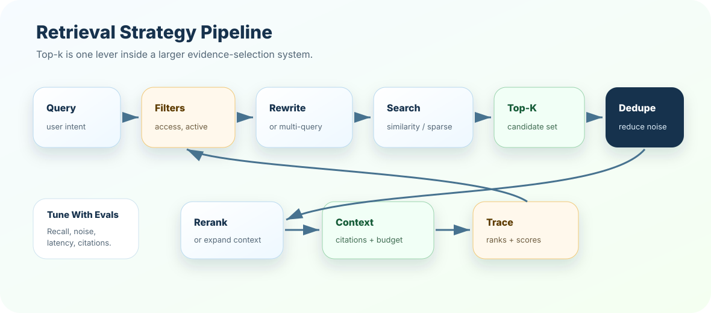

Using one top-k for every query
Symptom: simple questions get noisy context while complex questions miss evidence.
Better move: use intent-aware or eval-driven k.
Retrieval is where RAG decides what evidence the model is allowed to see. Top-k, scores, filters, query rewriting, and multi-query retrieval are not tiny tuning knobs; they shape answer quality, latency, cost, and trust.
A user asks, "Can an EU annual customer get a refund after renewal?" The answer depends on the right policy chunk, the EU region filter, active document status, and maybe a parent section with exceptions. If retrieval returns generic refund chunks but misses the renewal exception, the answer will be incomplete.
Do not maximize top-k blindly. Maximize useful evidence inside the context budget.
Is the user asking for a definition, policy, comparison, troubleshooting step, or decision?
Restrict by access, tenant, status, region, source type, and effective date.
Use vector, sparse, hybrid, multi-query, or rewritten query strategies.
Deduplicate, expand parent context if needed, cap tokens, and cite exact evidence.
A good receptionist does not send every visitor to every department. They ask enough questions, check permissions, route to the right team, and avoid wasting everyone’s time.
Retrieval does the same job for RAG. The user question arrives. Filters act like permission checks. Search routes to likely evidence. Top-k decides how many people are invited into the room. Context assembly decides who actually gets to speak.
Similarity search compares the query vector with stored vectors and ranks chunks by closeness. It is often the first retrieval strategy, but not the only one.
Paraphrases, semantic questions, concept matching, support articles, and natural language queries.
Exact IDs, rare error codes, stale documents, access rules, and questions needing multiple facts.
Always inspect whether the gold chunk appears in top-k and whether it passes filters.
Top-k is the number of candidates returned from retrieval. A top-k of 3 returns the three highest-ranked chunks. A top-k of 20 returns more candidates but can add noise and cost.
The correct chunk may be rank 6, but top-k 3 never lets it reach the model.
Unrelated or duplicate chunks crowd the prompt and confuse answer generation.
Simple FAQ may need k=3; policy comparison may need k=12 plus reranking.
Choose k using Recall@k, citation support, latency, and token budget.
Scores help rank chunks, but they are not universal confidence values. A score of 0.82 may be strong in one embedding model and weak in another.
Do not copy a threshold from another project. Build score distributions from your corpus, inspect false positives and false negatives, and tune thresholds with evals.
if top_score < calibrated_min_score:
answer: "I do not have enough evidence"
if gold_chunk_rank > top_k:
increase k, rewrite query, hybrid search, or rerank
if top chunks are duplicates:
dedupe before context assemblyFilters narrow retrieval to allowed and relevant chunks. They are not optional in production systems.
Filters can also cause failures. If metadata is wrong, the gold chunk may be filtered out. Always log filtered-out gold chunks during evals.
Query rewriting transforms the user question into a better retrieval query. It may expand acronyms, remove conversational fluff, add domain terms, or split a complex question.
User questions are vague, conversational, multilingual, acronym-heavy, or missing domain terms.
A bad rewrite can change intent and retrieve confidently wrong evidence.
Log original query, rewritten query, rewrite reason, and retrieval differences.
Multi-query retrieval searches several reformulations of the same user need. It improves recall when one phrasing misses evidence.
user: "Can I get money back after annual renewal?"
queries:
1. "annual renewal refund eligibility"
2. "refund after subscription renewal"
3. "EU annual plan cancellation refund exception"
merge -> dedupe -> rerank -> contextThe trade-off is cost and latency. Multi-query retrieval should be used when recall matters enough to justify extra searches.

{
"query": "refund after annual renewal",
"rewrite": "EU annual plan renewal refund exception",
"filters": {"region": "EU", "status": "active"},
"top_k": 8,
"gold_rank": 3,
"duplicates_removed": 2,
"context_chunks": ["refund:v3:c12", "refund:v3:c13"]
}A strong answer sounds like this: "Top-k controls how many candidates retrieval returns, but the right value depends on query type, corpus quality, reranking, context budget, and risk. I tune k with Recall@k, citation support, latency, token cost, and answer quality. I also use filters, query rewriting, dedupe, and hybrid retrieval when simple similarity search misses evidence."
Do not say "we set k to 5." Say why, what failures you observed, how k changes by intent, how filters are applied, and how traces prove the gold chunk entered context.
Create a retrieval policy for three query types: simple FAQ, policy exception, and troubleshooting runbook. Define top-k, filters, rewrite behavior, multi-query usage, dedupe, and metrics for each.
Next, test retrieval judgment in the quiz, then build a top-k policy planner in exercises and project.